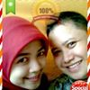
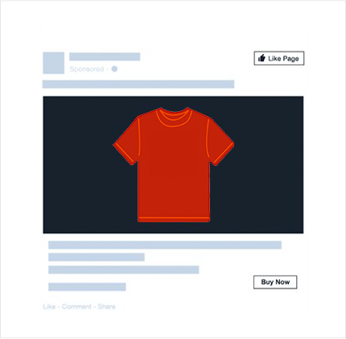
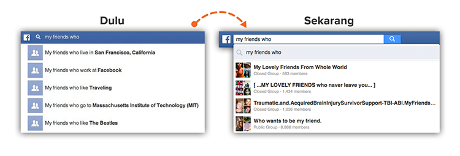
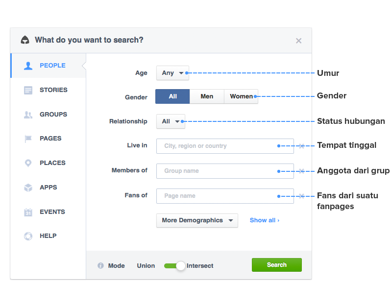
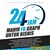
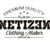

has Helped 5025+ Internet Marketer like You to..
this Software help you to:
There is still many more benefits can you get. , .
Discount 50% END at
Thank you The Graph .. I use this tools to play CPA and get $60.000.
 Bachrun aka Bang Dirga Internet MarketerThe Graph help me to earn $100,000/monthly, once more, thanks mas yudhis
Mohammad Ulun Nuha Affiliate MarketerNotes from
Yudhis Adi Nugroho
Hallo Smart Marketer !
Do you Know? Facebook has been transformed into "search engine" such as Google.
Data Analyst Company, Kissmetric, mention that Facebook has 1.35 BILLION users around the world, 30 BILLION content every month, and Facebook users interact with more than 900 MILLION objects.
Worst and Best things from Facebook is
“Facebook knows everything about us”
age, gender, marital status, education, jobs, hobbies, interest, even anything you spoke in Facebook,
...and sure your location now
All data are noted and can be searched in their databases
thats mean....
This Facts is Teribble, and profitable for marketer dan businessman like you
So Facebook has become
BEST PLACE to do RESEARCHES.
Example, you want to create a T-Shirt Campaign in teepring.com.
it's will be more effective if that T-Shirt design
PROVED loved by Facebook users?
you can find the data in Facebook.
you just need to search the data you need.
in 2013,
facebook release SEARCH ENGINE named
the Feature help you to find posts, people, group, events etc.
graph search then become a weapon for world marketer to do market research.
“Graph Search has important role to targeting ads in Facebook. As marketer, the data we get from a particular search, can sharpen the ability of our ad targeting”
Amy PorterfieldBut the Problem is...
Facebook change the search result just FOCUS on YOUR FRIEND.
For example when you are looking for t shirt design examples that are peoples loved in Facebook, Facebook displays search results from people or fanspage that closest relationship with you.
Previously this feature is very easy to use because of the suggestion that really great ...
...but now the Suggestions is minimal and the results is not relevant
thats mean, to RESEARCH in Facebook...
this is the examples..
People Search
Search People based on work place
Search People based on fanspage that he like
Search people that not your friend but you want to know anything of them
Search Friend interest
other Search People
Search new Groups
typing in loooong keywords
the Results is not found !
THE GRAPH adalah software yang di install di browser Firefox dan Chrome.
Dan mengubah browser tersebut menjadi sebuah peta harta karun Facebook.
Anda dapat mencari dan memfilter berbagai kreteria pencarian dengan cepat mudah, tanpa harus menghafal keyword pencarian di Facebook graph search yang rumit rumit itu.
Sehingga Anda dapat menemukan data apapun di Facebook, yang bisa anda gunakan sebagai dasar untuk menyusun strategi pemasaran Anda di Facebook
Dengan The Graph, Anda dapat mencari orang berdasarkan
Berikut ini daftar lengkap filter yg dapat Anda gunakan...
Menggunakan Facebook hanya untuk iseng iseng tanpa memanfaatkannya untuk membangun relasi adalah sebuah kesalahan besar
Di LinkedIn, anda harus membayar $575 per tahun hanya untuk:
Sedangkan di Facebook, Anda bisa melakukan poin 2,3 dan 4 dengan GRATIS.
Dengan The Graph, Anda dapat mencari, menemukan dan menjalin relasi dengan orang orang yang bisa membuat bisnis Anda menjadi lebih baik. Misalnya:
Kalo Anda belum berani ngiklan di Facebook (berbayar) dan lebih milih cara2 gratisan dulu, beternak akun klonengan dengan teman2 yang sangat tertarget bisa menjadi solusi.
Misalnya, kalo produk kita lumayan mahal, kita bisa cari orang2 yang berduit dengan kriteria2 tertentu
Network = Net Worth. Kita bisa ngembangin network/relasi kita, menjalin relasi dengan orang orang baru yang bisa bantu meningkatkan bisnis kita
Misalnya...
Buat pebisnis MLM juga bisa
Misalnya Anda mau jualan tshirt tentang MMA (Mixed Martial Arts).
...dan Anda sama sekali buta tentang MMA.
Untuk mencari tau lebih lanjut tentang MMA, Anda bisa memetakan topik MMA tersebut menjadi objek2 seperti
Data data seperti itu dapat membantu targeting iklan kita lebih tepat sasaran, dan lebih scalable.
Saya belum pernah memberikan testimoni di sales letter manapun sebelumnya. Tetapi Tool Mas Yudhis, sangat layak diapresiasi. Dahsyat!! Ringan, dan powerfull banget! Jadi banyak dapet ide untuk monetasi.
Saran untuk para pemula: Pahami betul fungsi tool ini sebelum memutuskan untuk membeli. Simak video tutorial penggunaan tool dengan baik.
Rakean Id Rakean.idTool yang akan membuka pikiran Anda dalam membuat Iklan HIGH CTR!!
Saya modal iklan 200rb dapet $300an lebih dikit. Thanks ya om buat toolsnya, bantu banget buat main CPA.
Tool wajib buat para pemilik akun FB apalagi penggiat FB Marketing. Penggunaannya MUDAH, RINGAN tapi POWERFULL! Mempermudah Riset Audience, Membuat Akun Klonengan Tertarget, Pokoknya KEREEN. Thanks Mas Yudhis
 Adrianto Sri Widagdo Masandri.bizThe Graph mas yudhis ini sudah menghasilkan hampir $100,000/monthly, once more, thanks mas yudhis
Mohammad Ulun Nuha Affiliate MarketerTools ini sadis... harusnya dijual terbatas! gimana gak, masa FB bisa dlihat pasar ceruknya secara spesfik.. wedan, jualan di fb jdi tambah lebih mudah dan laris gara2 tools ini....
Abdillah Pgo Internet MarketerToolnya the graph emang GILA! Saya bisa mencari sumber target orang sesuka hati. Saya jg menggunakan the graph untuk mencari sumber informasi bahkan informasi dari kompetitor. Pokoknya KEREN...
Yoga Nurcahya Socialinjectionpro.comIni pencari harta karun bisa juga untuk pembangkit kenangan lama. Keren!
Irwan Kartadipura Founder IndoCPA, PriaMalas, Mobiggr, Maliome HackerspacePernah mencicipi tool SS yang kualitas-nya sudah bagus dan bermanfaat. Kali ini Mas Yudhis mengeluarkan tool terbaru, The Graph, tool yang memudahkan kita mencari ladang emas di fb.
Sutejo Talaman Internet MarketerAnda bisa melihat kompetitor yang menjual produk yang sama dengan anda, meniru cara mereka membuat ad copy dan juga strategi marketingnya. Tapi tool ini bukan hanya untuk marketer. Saya juga bisa stalking, mencari posts yang menarik dan menemukan teman teman lama saya.
Hadie Danker DankeDevThe Graph sangat mempermudah pencarian konten di facebook. Dalam hitungan detik kita dapat menemukan konten yang sangat "berharga". Konten ini selanjutnya dapat kita ATM (amati, tiru, modifikasi), untuk keperluan digital campaign kita di Facebook. Dari segi tool, kelebihannya sangat ringan, sangat user friendly dan sangat cepat! Wajib dimiliki terutama para digital marketers..
Fico Maulana Co-Founder Brilliant DigitalKetika saya dapet kabar event musik reunion tahun 80-90, dengan gampang saya bisa nemu event tersebut di Facebook sekaligus tau siapa aja teman temen saya yang akan dateng di event tersebut. The Graph bener2 ngubah Facebook jadi social search engine.
Sendy Putra ProgrammerNyobain tools THE GRAPH milik mas Yudhis Adi Nugroho jadi nemu banyak bgt ide desain teespring euy.. Dengan tools The Graph ini kita bisa tau contoh2 desain sesuai dg keyword atau niche yg kita cari, kemudian bagaimana copywriting yg mereka gunakan, serta gambar yg dipakai. Tentunya masih banyak fungsi2 kereen yang lain.. tp yg jelas tools ini bener2 ngebantu saya banget buat nyari ide2 desain.
Fuad Mudzakir Internet Marketer - Teespring SellerThe Graph merupakan tool Facebook paling inovatif dan memberikan banyak benefit untuk membantu para Facebook marketer. Sangat lengkap, ringan dan cepat untuk mengeksplorasi Facebook Graph menjadi lebih advance lagi. Kelengkapan fiturnya menjadikan The Graph wajib menjadi ujung tombak jika Anda melakukan kampanye marketing melalui Facebook agar bisa lebih tertarget dan hemat waktu serta biaya.
Handoko Tantra Co Founder Ratakan.comSaya biasanya hanya beriklan via adwords dan kurang begitu ahli di fb ads, tapi sejak memakai the graph ternyata fb ads juga menyenangkan untuk meningkatkan pendapatan dari bisnis online saya. Thanks mas Yudhis, toolsnya keren dan wajib bagi setiap pebisnis online, intinya riset dulu baru iklan dan akan terjadi ROI besar-besaran dengan memakai The Graph
Imanuel Ferryandi Pakar AdwordsIbaratnya seperti ini, ada sebuah Gudang bahan makanan, dan diperlukanlah sebuah kunci untuk membuka pintu gudang tersebut. Kunci itulah yang dinamakan 'The Graph' .. setelah pintu terbuka oleh kunci tersebut, tersedialah bahan makanan yang tak terbatas jumlahnya. Setelah itu terserah anda, mau anda masak, atau di jual, atau hanya dilihat-lihat juga bisa..
Terima Kasih The Graph .. digunakan untuk bermain CPA dapat hasil sekitar $60.000. Sebuah tool investasi dengan perolehan Jutaan persen ROI
Bachrun aka Bang Dirga Internet MarketerAlasan terbesar saya merekomendasikan The Graph adalah aksesibilitas yang bakal Anda dapatkan ke Kreatornya - Yudhis Adi Nugroho. Jangan lihat kehebatan The Graph - itu sudah pasti ciamik banget.
Tool bagus datang dan pergi, tapi networking dengan 'man behind the gun' jauh lebih penting dari sekedar membeli Toolnya.
Tahun 2014 saya memberi penghargaan Mbah Katob's Award kepada salah satu tool buatan mas Yudhis sebagai Best Tool of the 2014, dan kayaknya itu akan terjadi dengan The Graph di tahun 2015 ini.
Jika anda ingin mencari harta karun di Facebook, jangan lupa: harta karun Anda sebenarnya adalah Networking. Memiliki akses secara pribadi ke sang Kreator. Itu yang seharusnya menjadi pertimbangan utama Anda membeli The Graph. Believe me on this one and yeach! you can thank me later.
Mbah Katob PenghisapDarahNewbie.comSelain fungsi serius utk riset potensi pasar, nyari ide produk, ngintip2 fanpage kompetitor, ternyata The Graph cocok juga buat yang mau nyari jodoh sesama Blogger/Imers. Jadi kalo lagi musim badai begini gak repot2 buat ngejelasin kenapa gak PIP
Sulis Bae Bloggersaya diberi kesempatan untuk mencoba The Graph dan sudah saya buktikan dan praktekkan sendiri. Hasilnya sungguh2 mengejutkan. Dalam waktu singkat, video ini jadi viral banget, padahal saya hanya melakukan ATP. Amati Tiru Plek
 Andre Bloggers KaosNetizen.comDiskon 50% ini berakhir dalam waktu
Beli the graph tanpa resiko. 30 hari sejak tanggal pembelian anda, apabila The Graph tidak bisa digunakan di browser anda, dan kami tidak dapat membantu anda untuk memperbaiki masalah tersebut, uang anda kembali 100%. Tanpa syarat maupun pertanyaan apapun.
Bisa. Saat ini the graph tersedia untuk 2 browser, mozilla firefox dan google chrome. Dan anda bisa menggunakan di ke dua browser tersebut selama masih dalam 1 device yang sama.
Bisa. Anda bisa menggunakan The Graph di desktop operating sistem selama ada browser mozilla firefox atau google chrome
Tidak bisa. karena browser untuk mobile device belum mendukung addon/extension. The graph hanya bisa digunakan di desktop/laptop/pc.
Tidak bisa. License hanya berlaku untuk 1 user dan 1 device.
Diperbolehkan selama pindah device itu bersifat permanen.
Tidak bisa. Hal itu tidak diperbolehkan oleh Facebook.
Seumur hidup.
Tapi tidak ada jaminan bahwa The Graph dapat berfungsi dengan baik seumur hidup.
Tidak ada.
Ya. The Graph hanya membantu untuk mempermudah pencarian di Facebook graph search.
Namun perlu anda ketahui bahwa The Graph sangat bergantung pada sistem Facebook graph search. Apabila suatu saat Facebook melakukan perubahan yang menyebabkan The Graph tidak bisa berfungsi dengan baik, maka tidak ada kebijakan pengembalian uang.
Kami akan selalu berusaha meng-update the graph agar dapat mengikuti perubahan perubahan yang terjadi di Facebook, selama itu masih memungkinkan.
Tidak menutup kemungkinan akan biaya tambahan untuk update ke the graph versi terbaru yang sifatnya optional. Untuk update kecil, bugs fix, tidak ada biaya tambahan.
Manfaatkanlah sekarang dengan sebaik baiknya selagi bisa.